What's new with Chart2Code benchmark
TL;DR: We introduce Chart2Code, a new benchmark designed to evaluate chart generation capabilities of LMMs under progressively challenging conditions. There are five tasks in the Chart2Code benchmark.
Overview
Chart2Code is a new benchmark for evaluating the chart understanding and code generation capabilities of large multimodal models. Chart2Code is explicitly designed from a user-driven perspective, capturing diverse real-world scenarios and progressively increasing task difficulty.
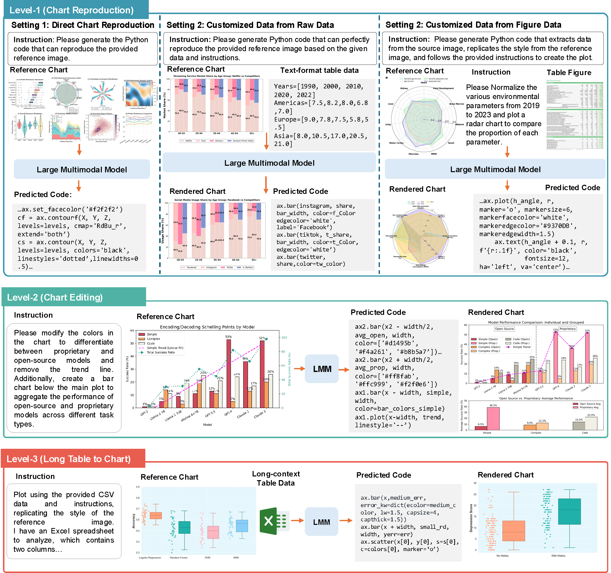To our knowledge, Chart2Code is the first hierarchical benchmark that reflects practical chart2code usage while systematically scaling task complexity. It consists of three levels as illustrated in above figure:
Level1(Chart Reproduction) reproduces charts from a reference figure and user query;
Level2(Chart Editing) involves complex modifications such as changing chart types or adding elements;
Level3(Long-Table to Chart Generation) requires models to transform long, information-dense tables into faithful charts following user instructions.
Data Statistic
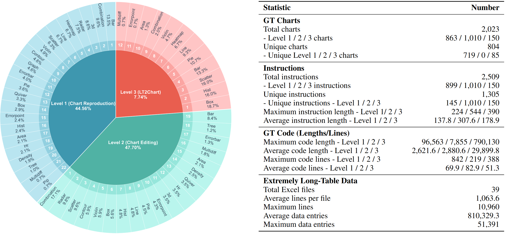In total, Chart2Code contains 2,023 tasks across 22 chart types, paired with multi-level evaluation metrics that assess both code correctness and the visual fidelity of rendered charts.
Benchmark Comparison
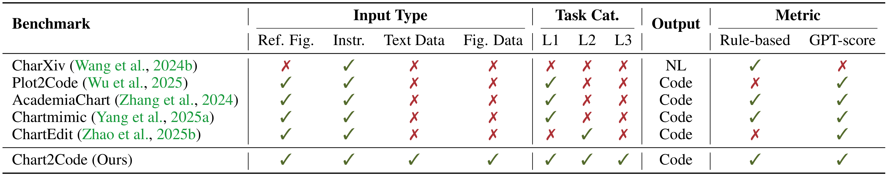Table 1: Chart2Code is a unique benchmark featuring a more comprehensive set of tasks that better reflect real-world scenarios.
Comparison of existing chart-to-code benchmarks.: Chart2Code is a new benchmark designed to rigorously evaluate chart generation capabilities of LMMs under progressively challenging conditions. This hierarchical design reflects real-world usage while progressively increasing difficulty, and its distinctions from prior benchmarks are highlighted in the above table.
Human-Model Performance Comparison
| Model | Direct Reproduction(DR) | Customize Raw Data(CRD) | Customize Figure Data(CFD) | ||||||
|---|---|---|---|---|---|---|---|---|---|
| Exec.Rate | LLM-Score | LMM-Score | Exec.Rate | LLM-Score | LMM-Score | Exec.Rate | LLM-Score | LMM-Score | |
| Proprietary | |||||||||
| Gemini-2.5-Pro | 90.4 | 0.6286 | 0.3807 | 100 | 0.6763 | 0.2661 | 87.04 | 0.6145 | 0.2214 |
| Claude-Sonnet-4 | 96.38 | 0.5629 | 0.2553 | 97.2 | 0.4878 | 0.236 | 88.89 | 0.5538 | 0.2273 |
| GPT-5 | 87.48 | 0.6334 | 0.3575 | 94.4 | 0.6070 | 0.2238 | 85.19 | 0.6082 | 0.2382 |
| Seed-1.5-VL | 85.81 | 0.5536 | 0.2341 | 97.2 | 0.6325 | 0.2662 | 65.74 | 0.5756 | 0.1962 |
| Seed-1.6-VL | 84.70 | 0.5237 | 0.8117 | 94.4 | 0.6525 | 0.2503 | 83.96 | 0.5978 | 0.2075 |
| Open-Source LMMs (non-thinking) | |||||||||
| LLaVA-OV-Qwen2-7B-SI | 32.82 | 0.1820 | 0.0154 | 11.11 | 0.4225 | 0.1550 | 0 | - | - |
| LLaVA-OV-Qwen2-7B-OV | 11.13 | 0.2651 | 0.0376 | 5.56 | 0.4213 | 0.0825 | 0 | - | - |
| DeepSeek-VL-7B | 48.68 | 0.2854 | 0.0431 | 61.11 | 0.5374 | 0.1114 | 10.19 | 0.2539 | 0.0145 |
| kimi-VL-A3B | 68.85 | 0.4409 | 0.1374 | 72.22 | 0.5887 | 0.2081 | 61.11 | 0.4641 | 0.1379 |
| Qwen2-VL-7B | 64.39 | 0.3364 | 0.0664 | 75.00 | 0.5950 | 0.1367 | 30.56 | 0.4235 | 0.0519 |
| Qwen2-VL-72B | 75.66 | 0.4368 | 0.1207 | 80.56 | 0.6082 | 0.1628 | 51.85 | 0.5518 | 0.1373 |
| InternVL-2.5-8B | 66.89 | 0.3348 | 0.0723 | 80.56 | 0.5712 | 0.1183 | 37.74 | 0.5715 | 0.0568 |
| InternVL-2.5-38B | 86.23 | 0.4577 | 0.1463 | 0 | - | - | 0 | - | - |
| InternVL-3-8B | 66.34 | 0.4371 | 0.1389 | 86.11 | 0.6169 | 0.1732 | 57.41 | 0.4450 | 0.1028 |
| GLM-4V-9B | 72.18 | 0.2881 | 0.0459 | 66.67 | 0.5628 | 0.1183 | 44.74 | 0.2904 | 0.0130 |
| Intern-VL-3.5-8B | 66.34 | 0.4371 | 0.1389 | 86.11 | 0.6169 | 0.1732 | 57.41 | 0.4450 | 0.1028 |
| MiMo-VL-7B-RL | 37.83 | 0.5439 | 0.2316 | 69.44 | 0.6068 | 0.2421 | 41.67 | 0.4962 | 0.1407 |
| MiMo-VL-7B-SFT | 44.65 | 0.4959 | 0.1983 | 69.44 | 0.6237 | 0.1852 | 46.30 | 0.5155 | 0.1732 |
| Qwen2.5-VL-7B | 65.64 | 0.4197 | 0.0994 | 75.00 | 0.5952 | 0.1515 | 44.44 | 0.5952 | 0.0910 |
| Qwen2.5-VL-72B | 65.36 | 0.5118 | 0.1893 | 100 | 0.6273 | 0.1989 | 37.96 | 0.5532 | 0.1688 |
| Molmo-7B-D | 34.77 | 0.2164 | 0.0943 | 4.55 | 0.2400 | 0.4600 | 0.97 | 0.0500 | 0.4100 |
| Qwen3-30B | 64.67 | 0.5293 | 0.2531 | 77.78 | 0.2546 | 0.2368 | 70.37 | 0.2412 | 0.2698 |
| Open-Source LMMs (thinking) | |||||||||
| MiMo-VL-7B-RL | 55.77 | 0.5261 | 0.2294 | 69.44 | 0.6053 | 0.2582 | 33.33 | 0.5807 | 0.2172 |
| MiMo-VL-7B-SFT | 50.35 | 0.6555 | 0.2130 | 86.11 | 0.6644 | 0.2248 | 38.89 | 0.5578 | 0.1455 |
| Qwen3-30B | 45.06 | 0.5582 | 0.2730 | 72.22 | 0.3367 | 0.3368 | 39.81 | 0.3185 | 0.2780 |
| Model | Exec. Rate |
Code-Level | Chart-Level LMM-Score |
||||||||
|---|---|---|---|---|---|---|---|---|---|---|---|
| Color | Grid | Layout | Legend | Visual | Data | Text | Type | LLM-Score | |||
| Proprietary | |||||||||||
| Gemini-2.5-Pro | 90.30 | 0.6217 | 0.8842 | 0.9613 | 0.5093 | 0.5170 | 0.7560 | 0.6330 | 0.9636 | 0.5742 | 0.2459 |
| Claude-Sonnet-4 | 91.19 | 0.5737 | 0.8110 | 0.9587 | 0.4714 | 0.4776 | 0.6736 | 0.5869 | 0.9563 | 0.5317 | 0.2147 |
| GPT-5 | 90.58 | 0.5812 | 0.8467 | 0.9499 | 0.4835 | 0.4815 | 0.7047 | 0.6096 | 0.9581 | 0.5663 | 0.2506 |
| Seed-1.5-VL | 63.17 | 0.5106 | 0.8230 | 0.9538 | 0.4408 | 0.4582 | 0.6983 | 0.7166 | 0.9400 | 0.5126 | 0.1975 |
| Seed-1.6-VL | 72.38 | 0.5277 | 0.8013 | 0.9471 | 0.4714 | 0.4453 | 0.6884 | 0.7312 | 0.9431 | 0.5151 | 0.1863 |
| Open-Source LMMs (non-thinking) | |||||||||||
| LLaVA-OV-Qwen2-7B-SI | 1.19 | 0.3507 | 0.6964 | 0.7833 | 0.4074 | 0.3002 | 0.5249 | 0.4871 | 0.7889 | 0.3157 | 0.0875 |
| LLaVA-OV-Qwen2-7B-OV | 2.57 | 0.3163 | 0.6013 | 0.6863 | 0.4488 | 0.2030 | 0.5685 | 0.4928 | 0.8154 | 0.3512 | 0.0366 |
| DeepSeek-VL-7B | 21.68 | 0.2523 | 0.6206 | 0.7350 | 0.2436 | 0.1820 | 0.4031 | 0.4538 | 0.7922 | 0.2583 | 0.0433 |
| kimi-VL-A3B | 49.5 | 0.3901 | 0.7270 | 0.9074 | 0.3411 | 0.3196 | 0.5724 | 0.5913 | 0.9033 | 0.3701 | 0.1039 |
| Qwen2-VL-7B | 24.95 | 0.2846 | 0.5825 | 0.7711 | 0.2723 | 0.2385 | 0.4693 | 0.4883 | 0.8141 | 0.3181 | 0.0780 |
| Qwen2-VL-72B | 55.05 | 0.4013 | 0.7704 | 0.9044 | 0.3464 | 0.3345 | 0.6086 | 0.5744 | 0.9098 | 0.3928 | 0.1140 |
| InternVL-2.5-8B | 21.29 | 0.3341 | 0.7002 | 0.8362 | 0.3148 | 0.2955 | 0.5421 | 0.5530 | 0.8536 | 0.3344 | 0.0869 |
| InternVL-2.5-38B | 68.22 | 0.4544 | 0.7902 | 0.9405 | 0.4146 | 0.3745 | 0.6334 | 0.6361 | 0.9338 | 0.4311 | 0.1367 |
| InternVL-3-8B | 4.55 | 0.3491 | 0.5914 | 0.9447 | 0.3389 | 0.3645 | 0.5561 | 0.5421 | 0.8556 | 0.3419 | 0.0943 |
| InternVL-3-38B | 67.43 | 0.4720 | 0.7853 | 0.9410 | 0.4133 | 0.3994 | 0.6525 | 0.6538 | 0.9235 | 0.4528 | 0.1476 |
| GLM-4V-9B | 10.69 | 0.2011 | 0.6910 | 0.7794 | 0.2357 | 0.2196 | 0.4604 | 0.5003 | 0.7472 | 0.2953 | 0.0770 |
| Intern-VL-3.5-8B | 27.23 | 0.4015 | 0.7350 | 0.9056 | 0.3566 | 0.3718 | 0.6121 | 0.6505 | 0.8998 | 0.3964 | 0.1466 |
| MiMo-VL-7B-RL | 20.59 | 0.4378 | 0.8462 | 0.9205 | 0.4201 | 0.4231 | 0.6505 | 0.6666 | 0.9200 | 0.4615 | 0.1573 |
| MiMo-VL-7B-SFT | 21.88 | 0.4325 | 0.7506 | 0.8941 | 0.3823 | 0.4035 | 0.6431 | 0.6564 | 0.9405 | 0.4459 | 0.1399 |
| Qwen2.5-VL-7B | 33.36 | 0.3524 | 0.7374 | 0.8592 | 0.3296 | 0.3302 | 0.5944 | 0.5780 | 0.8887 | 0.3603 | 0.0974 |
| Qwen2.5-VL-72B | 71.49 | 0.5018 | 0.8229 | 0.9509 | 0.4467 | 0.4242 | 0.6673 | 0.6815 | 0.9348 | 0.4739 | 0.1684 |
| Molmo-7B-D | 0.99 | 0.2471 | 0.8152 | 0.5636 | 0.1000 | 0.2275 | 0.3477 | 0.3082 | 0.3476 | 0.3488 | 0.1347 |
| Qwen3-30B | 41.39 | 0.54 | 0.8174 | 0.9587 | 0.4623 | 0.4501 | 0.6911 | 0.7084 | 0.9384 | 0.3611 | 0.2257 |
| Open-Source LMMs (thinking) | |||||||||||
| MiMo-VL-7B-RL | 27.62 | 0.5076 | 0.7560 | 0.9449 | 0.4109 | 0.4379 | 0.7006 | 0.6859 | 0.9446 | 0.4819 | 0.1737 |
| MiMo-VL-7B-SFT | 24.16 | 0.4562 | 0.7404 | 0.9286 | 0.3686 | 0.3980 | 0.6812 | 0.6617 | 0.9385 | 0.4496 | 0.1774 |
| Qwen3-30B | 42.38 | 0.5213 | 0.8248 | 0.9549 | 0.4718 | 0.4453 | 0.6924 | 0.7046 | 0.9403 | 0.4947 | 0.2362 |
| Model | Exec. Rate |
Code-Level | Figure-Level LMM-Score |
||||||||
|---|---|---|---|---|---|---|---|---|---|---|---|
| Color | Grid | Layout | Legend | Visual | Data | Text | Type | LLM-Score | |||
| Proprietary | |||||||||||
| Gemini-2.5-Pro | 29.33 | 0.7276 | 0.9733 | 1.0000 | 0.7727 | 0.6701 | 0.7880 | 0.8291 | 0.9470 | 0.3516 | 0.0361 |
| Claude-Sonnet-4 | 38.00 | 0.5676 | 0.7963 | 1.0000 | 0.8148 | 0.3731 | 0.5881 | 0.7175 | 0.9062 | 0.5125 | 0.007 |
| GPT-5 | 38.00 | 0.5676 | 0.7963 | 1.0000 | 0.8148 | 0.3731 | 0.5881 | 0.7175 | 0.9062 | 0.5125 | 0.0362 |
| Seed-1.5-VL | 18.67 | 0.7252 | 0.8929 | 1.0000 | 0.8869 | 0.5502 | 0.7182 | 0.7804 | 0.9690 | 0.0000 | 0.0611 |
| Seed-1.6-VL | 40.00 | 0.7030 | 0.8833 | 1.0000 | 0.7972 | 0.5396 | 0.7956 | 0.8128 | 0.9244 | 0.0000 | 0.0547 |
Results Analysis
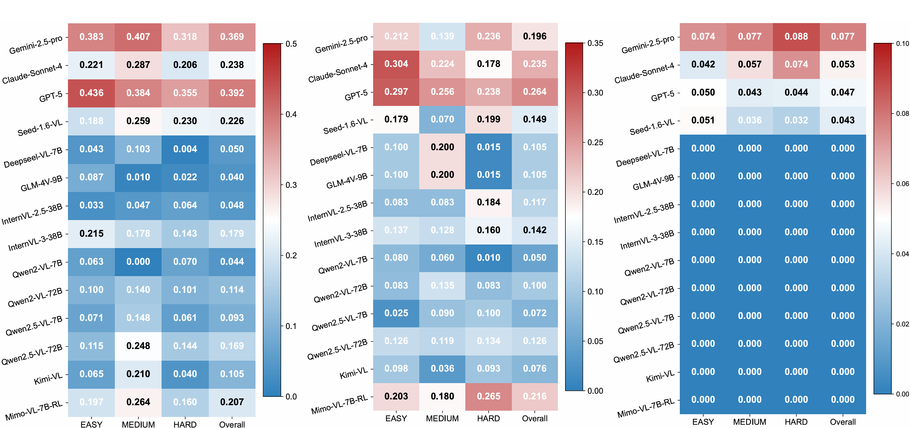Correlation of the model performance (i.e., LMM-score) on different manually annotated difficulties (i.e., Easy, Medium, Hard) on Level 1, 2, 3, respectively.
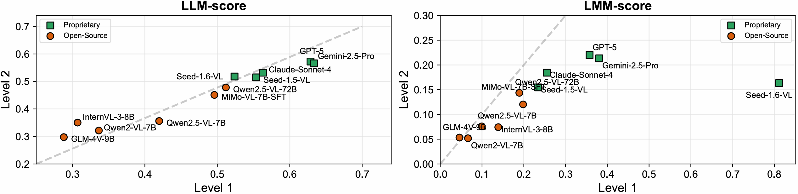Left: Both proprietary and open-source models generalize well on Level 1 and Level 2 tasks when calculating the LLM-score for predicted code assessment. Right: Proprietary models tend to obtain higher LMM-scores on the Level 1 task rather than the Level 2, while open-source models perform poorly on both tasks (scores are lower than 0.5).
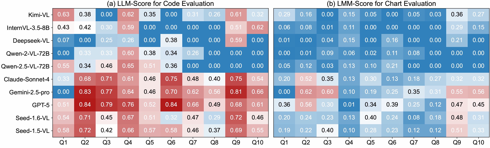Analysis of model performance on different task cases with LLM-score and LMM-score.
Example of Data and Error Cases
An Example of Level 1: Direct Reproduction
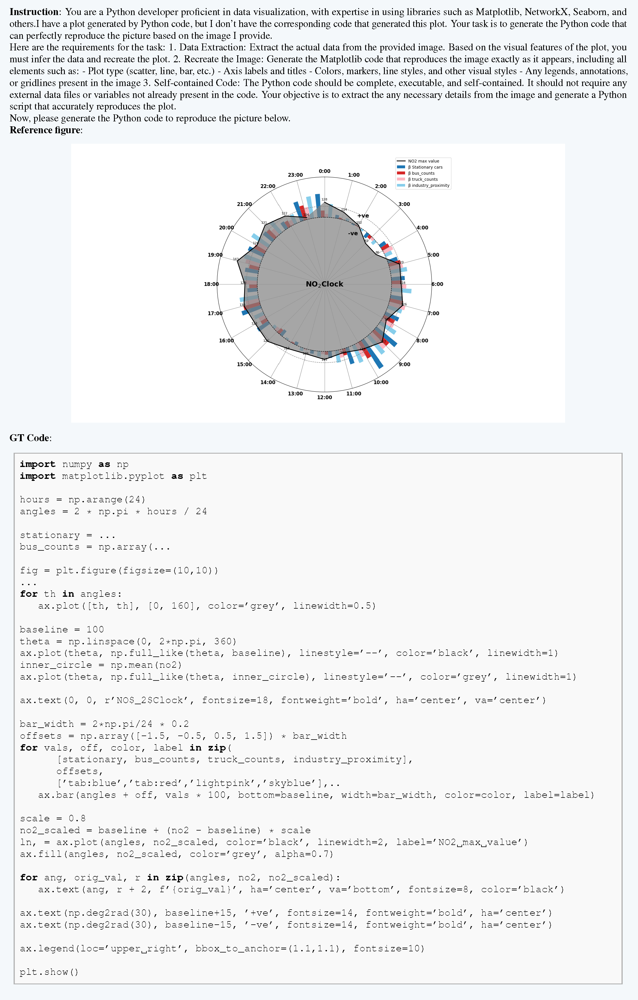An Example of Level 1: Customized Text-Format Table Data
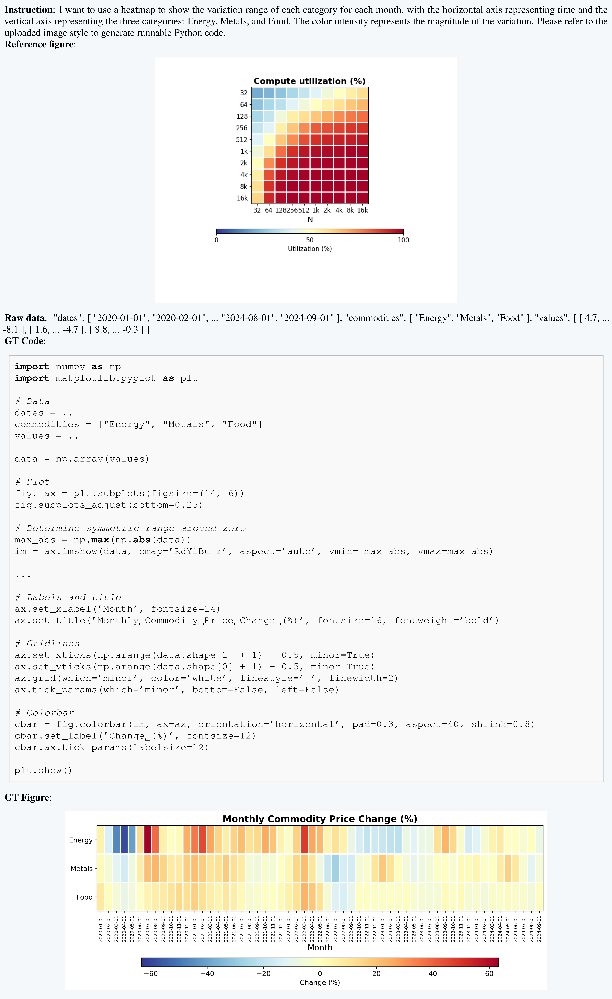An Example of Level 1: Figure-Format Table Data
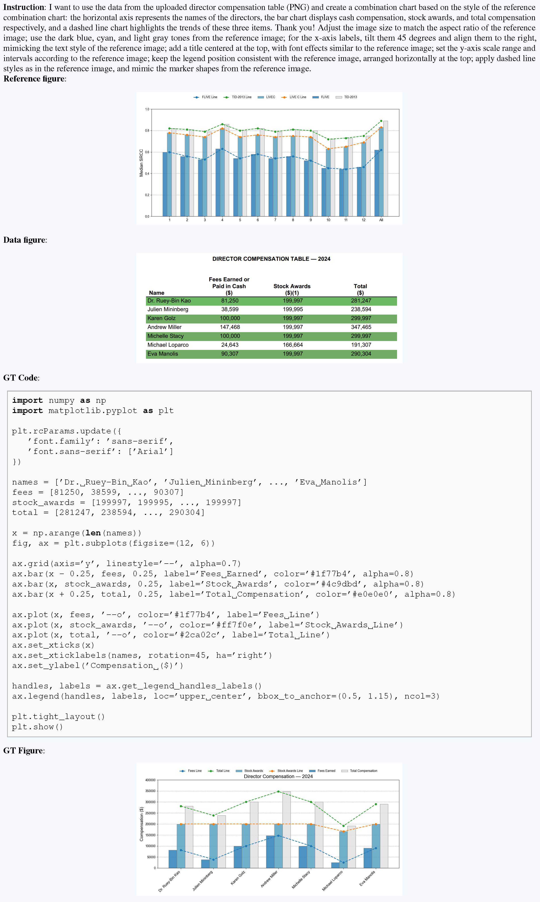An Example of Level 2
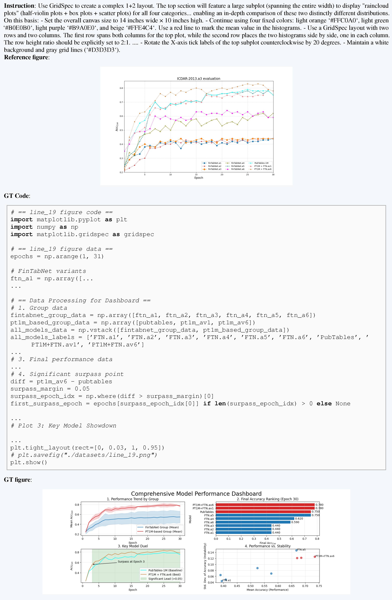An Example of Level 3

Error Cases Visualization
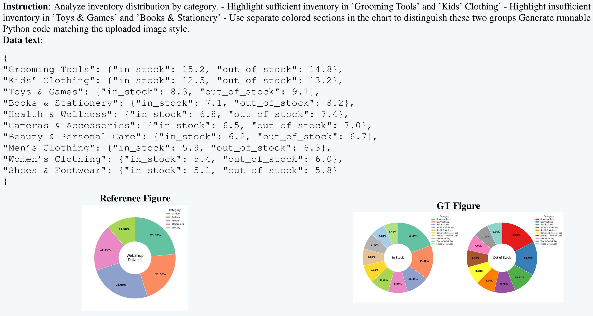 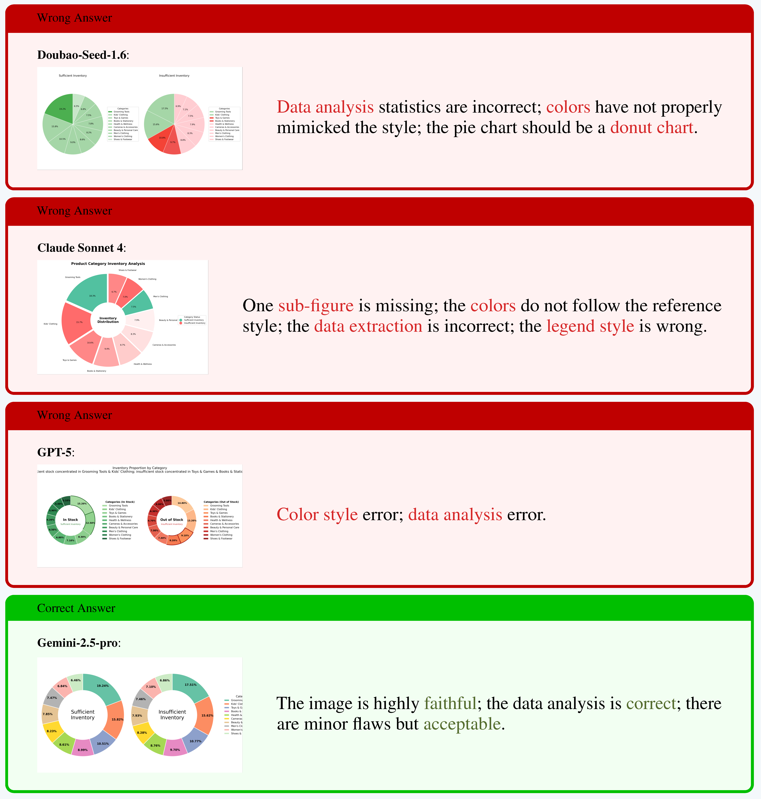Citation
@misc{tang2025chartscodehierarchicalbenchmark,
title={From Charts to Code: A Hierarchical Benchmark for Multimodal Models},
author={Jiahao Tang and Henry Hengyuan Zhao and Lijian Wu and Yifei Tao and Dongxing Mao and Yang Wan and Jingru Tan and Min Zeng and Min Li and Alex Jinpeng Wang},
year={2025},
eprint={2510.17932},
archivePrefix={arXiv},
primaryClass={cs.SE},
url={https://arxiv.org/abs/2510.17932},
}
Acknowledge: Thanks to Carlos & John for this webpage template. Also thanks to the SWE-bench team and their benchmark https://www.swebench.com/multimodal.html.
Template Usage: If you would like to use this website template for your own leaderboard, please send Carlos & John an email requesting permission. If granted, please make sure to acknowledge the SWE-bench team and link to this leaderboard on the home page of the website.